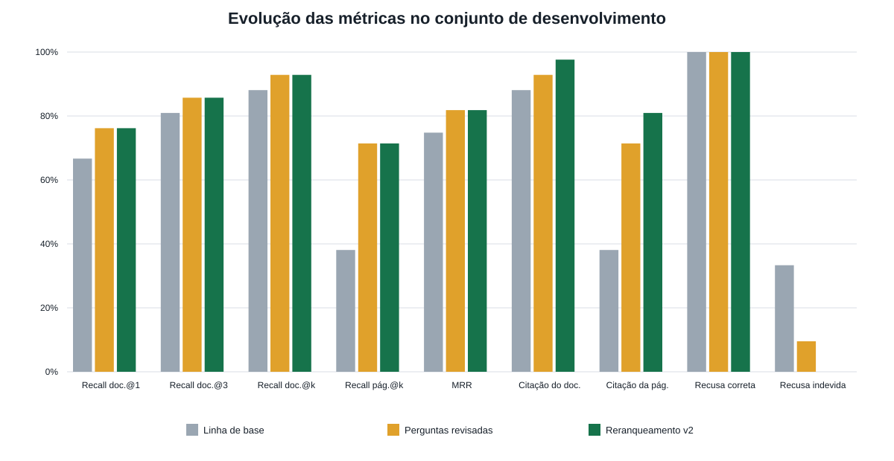

A etapa “Perguntas revisadas” mede a correção do benchmark. A etapa “Reranqueamento v2” acrescenta a mudança no RAG. O split final não foi executado.

| Etapa | Recall documento@1 | Recall documento@3 | Recall documento@k | Recall página@k | MRR | Citação do documento | Citação da página | Recusa correta | Recusa indevida | Latência média (ms) | Latência p95 (ms) |
|---|---|---|---|---|---|---|---|---|---|---|---|
| Linha de base | 66.7% | 81.0% | 88.1% | 38.1% | 74.8% | 88.1% | 38.1% | 100.0% | 33.3% | 1885 | 3391 |
| Perguntas revisadas | 76.2% | 85.7% | 92.9% | 71.4% | 81.8% | 92.9% | 71.4% | 100.0% | 9.5% | 1918 | 2733 |
| Reranqueamento v2 | 76.2% | 85.7% | 92.9% | 71.4% | 81.8% | 97.6% | 81.0% | 100.0% | 0.0% | 3023 | 5422 |